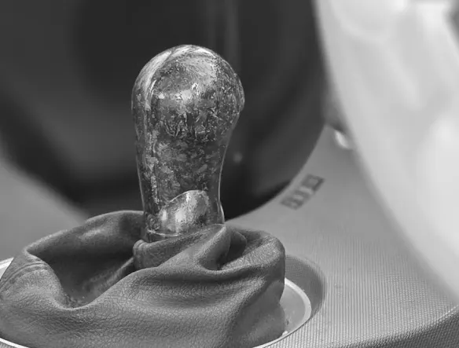
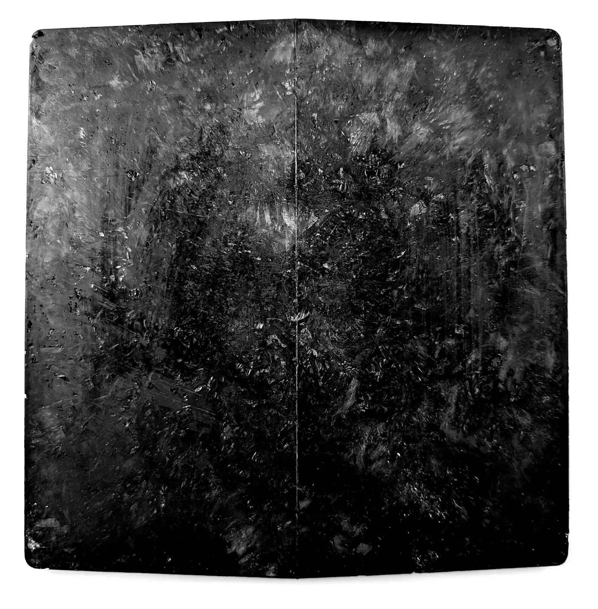
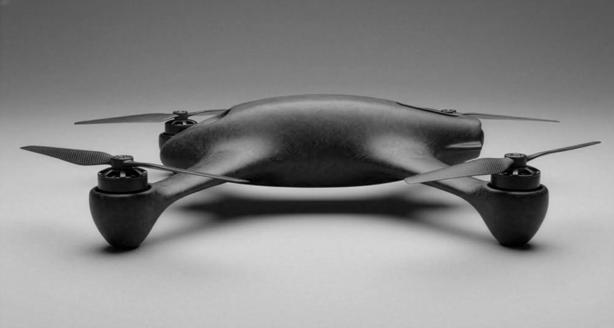
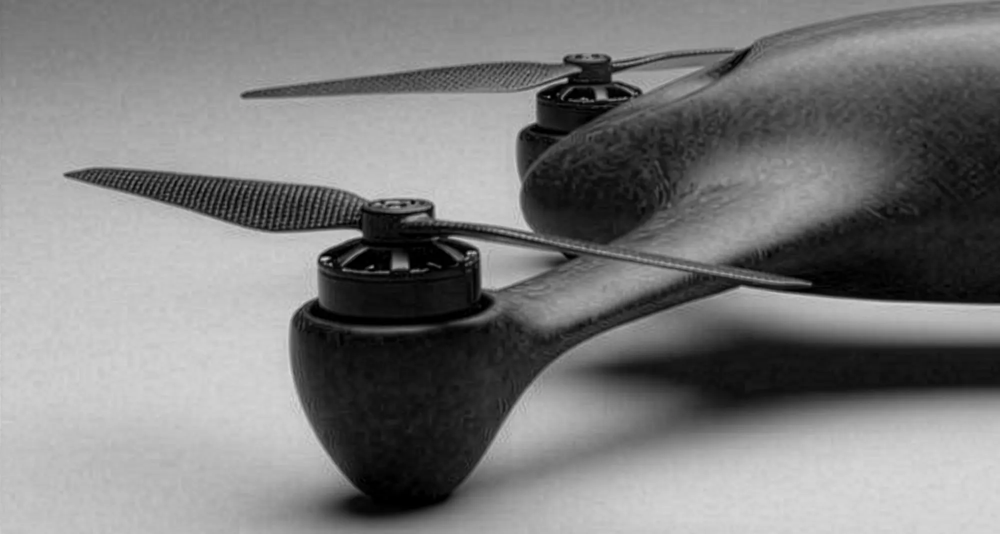
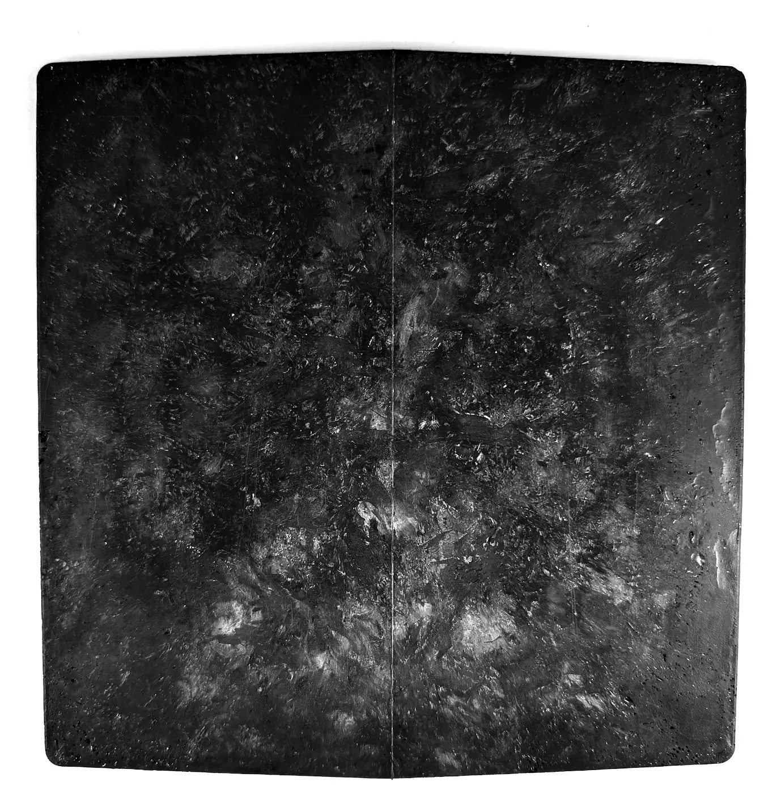

A · Defense
Attritable by design
Structural airframes and swarm-capable systems, where the airframe has to be cheap enough to lose and good enough to fly.

Structure. Electromagnetic function. Manufacturing that scales. One material, molded as one part.
01 / The trade
Every composite makes you choose. Performance or cost. Strength or speed. Build the structure, then bolt on everything it can't do by itself: the shielding, the brackets, the fasteners, the coatings. DARC collapses that trade.
02 / Origin
Albuquerque is hard on parts. High desert, high altitude, relentless sun. DARC began there as an idea: carbon fiber car parts that could stand up to it, and that were easier to make.
The first real part was a shift knob, pressed in one shot from a single charge of material, with the threaded insert molded inside. No weld lines. No machining. No glue.
Then the material started showing more than we'd asked of it. It was strong for its weight. It conducted. It kept its strength in every direction. We took the idea and our early research to New Mexico's national laboratories, and developed DARC with them. A car part turned into a platform.

03 / The material

Early development sampleA quasi-isotropic matrix built from short, discontinuous carbon fiber. It is engineered to process at scale, without the autoclave that defines conventional composites.
Woven carbon is strong in the directions you lay it up and weak in the others. DARC has no weave. The fibers land in every orientation, so the part carries load in every direction, and you can mold it into shapes a laminate can't follow.
04 / Process
A measured charge of DARC goes into a matched metal tool.
The tool closes. Fiber and resin flow together to fill the tool.
The closed tool moves to the oven to cure, with inserts already in place. The press is free for the next part.
Net shape out of the mold. Minimal trimming. Ready for integration.
No layup. No autoclave. Presses keep pressing while ovens cure, so output scales with tools, not presses.
DARC airframe concept · Rendered design, not a built product
Two molded halves, bonded. A clamshell airframe: two structures joined with adhesive. A popular comparable airframe uses 13 panels and 32 fasteners.
Shaped for flow, not for a laminate. Organic curves that woven carbon can't follow.
Designed around off-the-shelf hardware. Motors, props and electronics drop in.
Built to be expendable. Airframe economics for attritable fleets.
U1 · Studio views
Concept renders. A design direction for what DARC makes possible, not flight hardware.


06 / Why it matters
Carries load in every direction, not just along a weave.
Every gram out of the structure is a gram back for payload, range or margin.
Complex geometry, near net shape, inserts molded in, one press cycle.
One molded part replaces brackets, fasteners, sub-assemblies and add-on shielding.
No layup, no autoclave, no post-machining, no assembly steps.
Developed in Albuquerque, New Mexico, and built for a domestic supply chain.
07 / Applications
Structural airframes and swarm-capable systems, where the airframe has to be cheap enough to lose and good enough to fly.

Lightweight structure built for demanding environments, with electromagnetic function in the part itself.
Performance and motorsport components with carbon character and one-shot manufacturing.
Enclosures, housings and components that need strength, conductivity and durability without a bill of materials to match.
08 / Founders
Co-Founder · Operations & Supply Chain
Manages North American distribution for an automotive parts brand, with a background in professional Formula Drift competition and two seasons as a TV presenter. Leads operations, channel logistics and people, and brings a large following in the automotive community.
Co-Founder · Strategy & Commercialization
Directs corporate strategy, institutional partnerships and economic modeling. Background in energy commodities trading, financial risk management and quantitative analysis. Leads the laboratory collaborations and commercial growth.
Co-Founder · Tooling & Manufacturing
Machinist and toolmaker leading mold design and composite fabrication. NAVSEA Level 1 certified, with deep precision machining experience, including hardware fabrication for NASA's Mars Cube One program and CAD design for architectural metalwork at a major Los Angeles museum.
09 / Ecosystem
10 / Technical partnerships
Stronger, lighter, conductive, or simply faster to build. If your part could use any one of those, we want to hear about it.